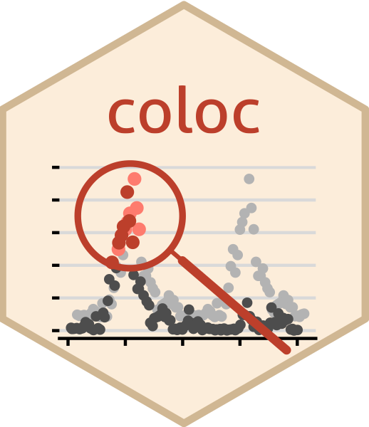

Download a complete local copy of the Open Targets credible sets
Source:R/coloc-query.R
ot_fetch.Rdquery_ot() downloads only the credible set files it needs for each query (typically one or two files, ~15 MB each) and caches them. Use ot_fetch() to download all of them (about 3.2 GB for release 26.06) in one go, for example on an HPC login node before running query_ot() on compute nodes without internet access, using the same cache directory.
Details
Because of its size, a persistent cache directory
(options(coloc.cache_dir=...), see coloc-options) is required.
Files already present
with the expected size are not downloaded again, so an interrupted
download can be resumed by calling ot_fetch() again.